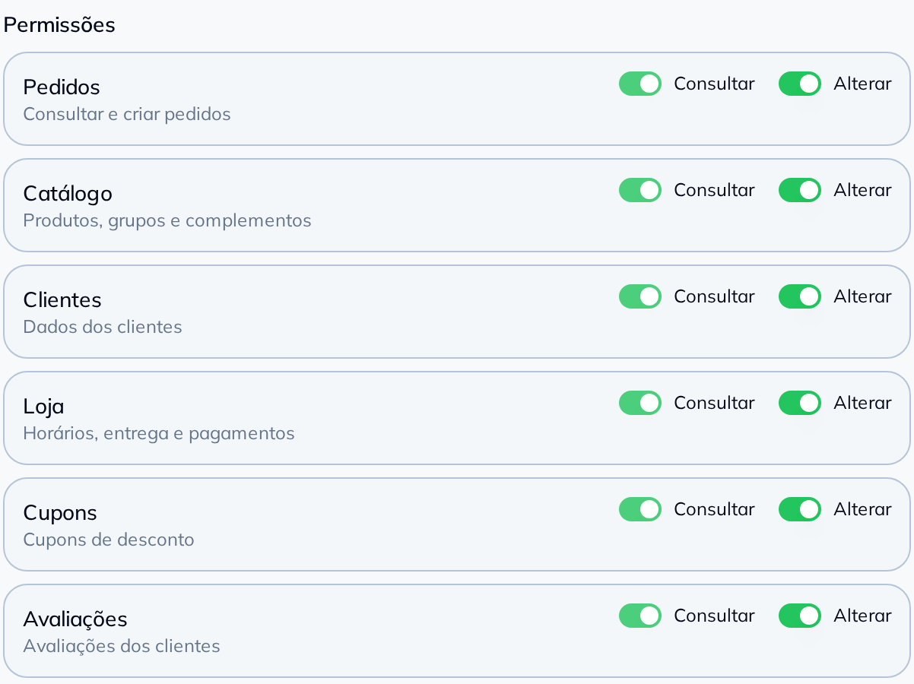

<!-- Slide 5: o medo. Os três slides anteriores dizem que o outro sistema lê e
     escreve na loja, e a essa altura o leitor já fez a conta sozinho: "então eu
     entrego a chave da minha loja para um terceiro?". A resposta cabe numa tela,
     e ela é a tela de verdade.

     A CAPTURA É A FOLHA `Aplicativos → API Aberta`, e o recorte COMEÇA EM
     `Permissões` DE PROPÓSITO. Acima da linha estão o Client ID e o campo do
     Client Secret: o repositório é público, a loja de exemplo roda em produção,
     e credencial de produção não é a "credencial de sandbox descartável" que o
     AGENTS.md libera para versionar. A imagem pura também vai para o git, então
     o corte é na origem — não existe versão desta captura com credencial
     dentro.

     O QUADRO FECHA EM `Avaliações`, a última área liberada. Abaixo dela a tela
     mostra Entregadores e Estoque apagados, com a etiqueta "Em breve", e
     promessa não é assunto de peça de lançamento. A #13 descartou as mesmas duas
     linhas pelo mesmo motivo. O `folga_pe` desta captura é 4 px e não 12: os
     cartões ficam a 8 px um do outro, e com 12 entrava uma tira do cartão de
     Entregadores no pé da imagem.

     O PAR `Consultar`/`Alterar` É O ARGUMENTO INTEIRO, e ele aparece doze vezes
     na mesma imagem. Não precisa de copy: o leitor vê seis linhas e doze
     chaves, e entende que a chave é dele. O que a copy acrescenta é a única
     coisa que a tela não diz em palavra — que marcar "Alterar" liga "Consultar"
     junto, porque quem altera também consulta.

     NÃO HÁ `.cartao__rotulo` AQUI, e a imagem não vai aos 904 px: é aritmética.
     A captura tem 601 px lógicos de largura por 450 de altura, e a 904 ela
     estica para 677 — com o rótulo em cima, o bloco passava dos 1262 px em que o
     rodapé tem de fechar, e o primeiro render saiu com o "arraste" por cima da
     última linha da tabela. A 860 px ela fecha em 644 e sobra folga. O título já
     diz de que tela se trata, e o corpo encolheu para duas linhas pelo mesmo
     motivo: nesta página quem argumenta é o print. -->
<div class="slide slide--suave">
  <div class="topo">
    <span class="logo"></span>
    <span class="contador">5 de 7</span>
  </div>

  <div class="pilha g24" style="margin-top: 22px; max-width: 904px">
    <span class="chapeu">A chave é sua</span>
    <h2 class="titulo titulo--pequeno">
      Você liga <span class="destaque">Consultar</span> e
      <span class="destaque">Alterar</span> em cada recurso
    </h2>
    <p class="corpo">
      A credencial só abre o que você marcou — e quem altera também consulta.
    </p>
  </div>

  <div style="margin: 30px auto 0; width: 860px">
    <div class="recorte">
      
    </div>
  </div>

  <div class="empurra"></div>

  <div class="rodape">
    <span class="pontos"><span></span><span></span><span></span><span></span><span class="on"></span><span></span><span></span></span>
    <span class="arraste">arraste</span>
  </div>
</div>
